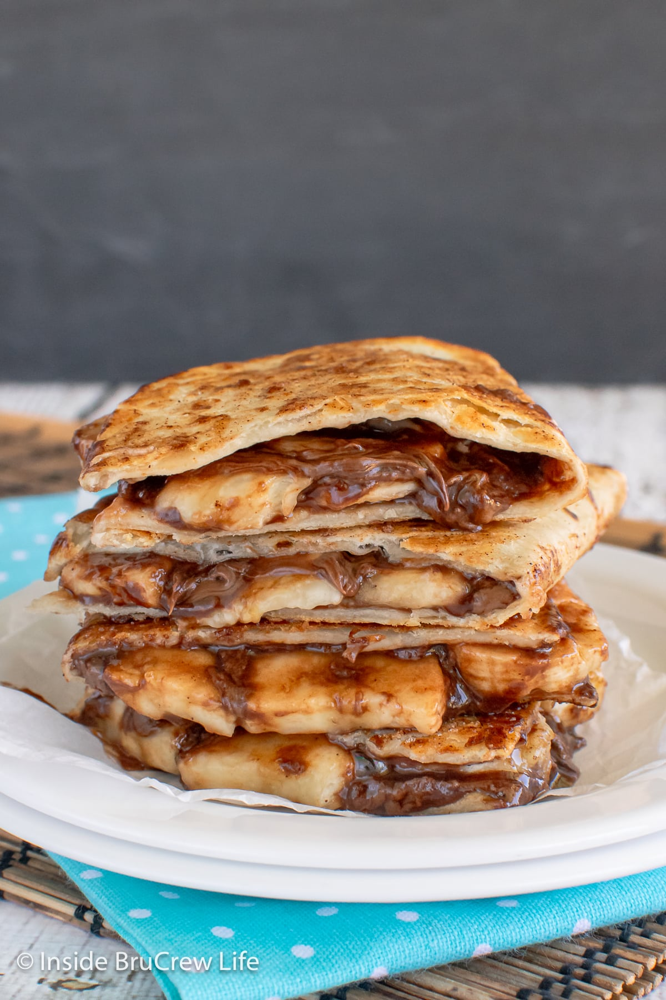

Banana Nutella Quesadillas

The banana and Nutella wrap is a quick, no-cook snack or breakfast
that kids and adults love alike. It’s perfect when you’re in a rush
but still want something indulgent. The creamy Nutella, combined
with the natural sweetness of the banana, makes for a delicious and
easy treat. The tortilla wrap holds everything together, and it’s
portable, making it great for on-the-go meals or snacks. You can add
a sprinkle of granola or chopped nuts for some extra crunch.
Ingredients
- 1 medium-sized tortilla wrap
- 1 banana(ripe, but not too soft)
- 2 tablespoons of Nutella(hazelnut spread)
Steps
-
Lay the tortilla flat on a plate and spread the Nutella evenly
across the surface. You can adjust the amount based on your
preference for sweetness.
- Peel the banana and place it in the center of the tortilla.
-
Roll the tortilla around the banana like a burrito, tucking in
the ends to prevent the filling from spilling out.
-
Slice the wrap in half or into smaller rounds for easier eating,
especially for kids.
-
Serve immediately for a sweet, satisfying snack, or pack it for
later!